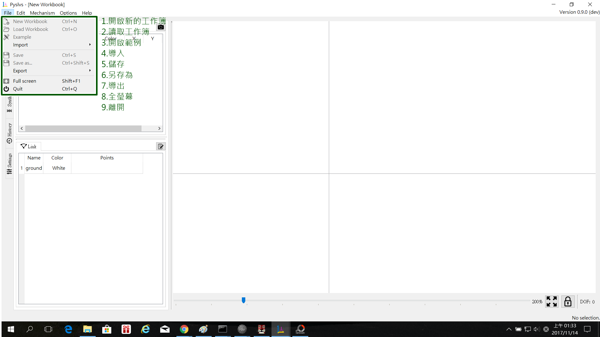
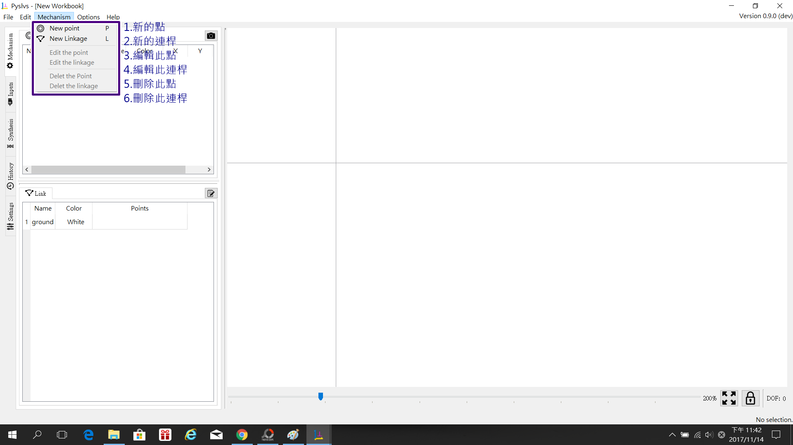
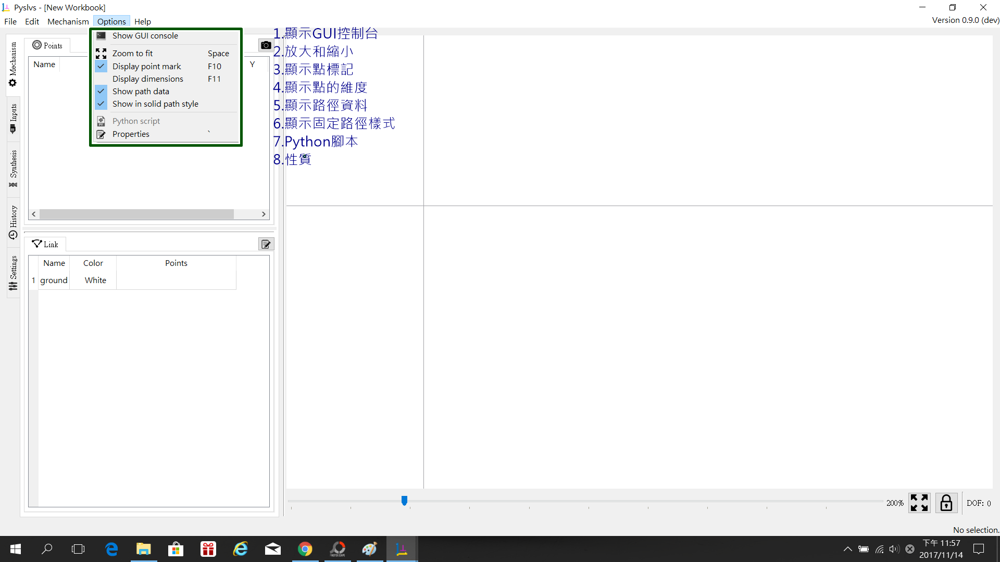

使用說明(1)及簡介:
Pyslvs基本是由Python和slovespace所開發出來的運動模擬軟體
可以在此軟體中用點和直線的連結來做基本的連桿運動分析及位置紀錄
此版本為0.9dev,目前處於開發中的階段,有部分功能尚未開放,現在做的是基本測試
以下為0.9dev版本的介面說明:
這裡是一開始的介面

左上角的功能有(藍色方框處由左看來):

1.檔案 2.編輯 3.機構 4.選項 5.幫助
檔案中的內容: 
1.開啟新的工作簿(尚未開放) 2.讀取工作簿(尚未開放) 3.開啟範例(尚未開放)
4.導入(PMKS) 5.儲存為(尚未開放)6.另存為(尚未開放)
7.導入 8.全螢幕 9.離開
編輯中的內容:

1.復原(取消)
2.重作(再加入)
3.批量移動(尚未開放)
機構中的內容: 
1.新的點(建立一個點,ALT+P) 2.新的連桿(建立一根連桿,ALT+L) 3.編輯此點(點的細節)
4.編輯此連桿(連桿的細節) 5.刪除此點 6.刪除此連桿
選項中的內容: 
1.顯示GUI控制台 2.放大和縮小 3.顯示點標記
4.顯示點的維度(X.Y座標) 5.顯示路徑資料 6.顯示固定路徑樣式
7.Python腳本 8.性質
幫助中的內容:

1.前往Pyslvs.com 2.前往倉儲 3.前往MDE.tw
4.關於Pyslvs 5.關於Qt
左側邊的部分(藍框部分):
機構(包含點和連桿):

這邊可以看到點的細節,還有連桿的細節,以及點和連桿之間配合的關係
如下圖所示: